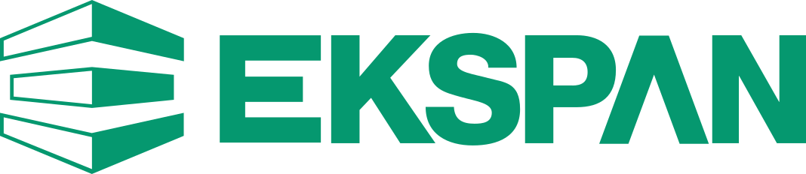

Home /The work.
ENGINEERING IN PRACTICE
The work.
The detail behind it.
A selected project collection showing EKSPAN’s bearing, manufacturing, installation and temporary works experience.

ENGINEERING IN PRACTICE
A selected project collection showing EKSPAN’s bearing, manufacturing, installation and temporary works experience.